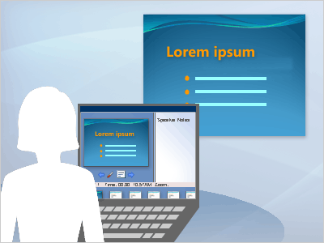
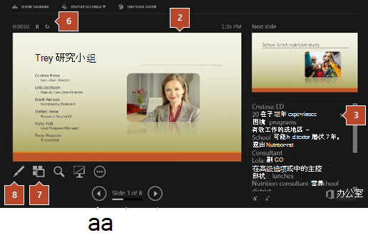

演讲者视图
介绍什么是演讲者视图。
演讲者视图 允许您在笔记本电脑等设备上 (计算机上使用演讲者备注查看演示文稿，而观众可以在另一台显示器上查看无备注的演示文稿) 。
演示者视图提供以下工具，以便更轻松地呈现信息：
-
可以使用缩略图按序选择幻灯片，并针对观众创建自定义演示文稿。
-
演讲者备注以较大的清晰类型显示，以便你可以将其用作演示文稿的脚本。
- 可以在演示过程中变暗或缩小屏幕，然后从中断位置恢复。 例如，你可能不希望在休息或问答期间显示幻灯片内容。

在演示者视图中，图标和按钮足够大，可轻松导航，即使使用的是不熟悉的键盘或鼠标。 下图显示了演示者视图中可用的各种工具。

1. 幻灯片编号
2. 当前向观众放映的幻灯片
3. 演讲者备注，可用作演示文稿的脚本
4. 单击转到上一张幻灯片
5. 单击转到下一张幻灯片
6. 演示文稿的已用时间（小时和分钟）
7. 单击以查看演示文稿中所有幻灯片的缩略图
8. 笔、激光笔或荧光笔工具